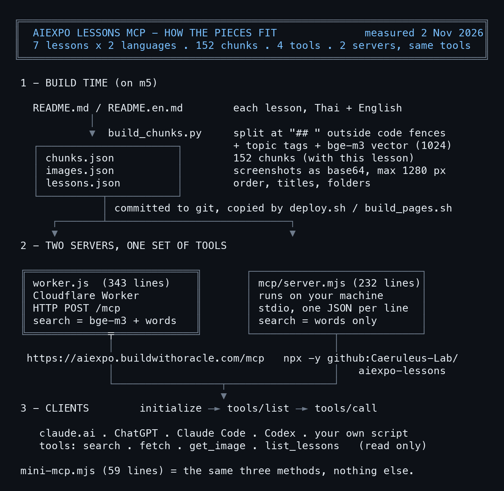

1. What MCP is
MCP (Model Context Protocol) is a common language between an AI and tools. The side the AI lives on is the client (claude.ai, ChatGPT, Claude Code, Codex); the side with the tools is the server.
- Every message is JSON-RPC 2.0:
{"jsonrpc":"2.0","id":1,"method":"...","params":{...}} - A server that only offers tools needs to answer three methods:
initialize: the client says hello; the server answers with its name, version and that it has toolstools/list: which tools exist and what input each takes (JSON Schema)tools/call: run a tool; the answer iscontent, as text or images- A message without an
idis a notification, e.g.notifications/initialized; the server does not answer it. - Two ways to carry the messages (transports):
- stdio: the client starts the server as a child process, writes one JSON per line to stdin and reads answers from stdout
- Streamable HTTP: the client POSTs JSON to one URL, such as
/mcp, and gets JSON back
2. The whole picture

The real size of each piece:
$ wc -l worker.js mcp/server.mjs build_chunks.py; jq '.chunks|length' chunks.json
343 worker.js
232 github/mcp/server.mjs
153 build_chunks.py
728 total
chunks: 128
model: @cf/baai/bge-m3
(exit 0)
3. The smallest MCP: mini-mcp.mjs
One file, 59 lines, Node 18 or newer, no npm install. It has one tool, search, over four notes kept in the file.
#!/usr/bin/env node
// mini-mcp.mjs: the smallest useful MCP server. stdio, JSON-RPC 2.0, no dependencies, Node 18+.
// One tool, `search`, over a few notes kept in this file. Swap NOTES for your own data.
//
// node mini-mcp.mjs (an MCP client starts it; it reads stdin, writes stdout)
// claude mcp add mini -- node /path/to/mini-mcp.mjs
import { createInterface } from "node:readline";
const NOTES = [
{ id: "awaken", text: "/awaken gives a new Oracle its name, its principles and its ψ memory folder." },
{ id: "rrr", text: "/rrr writes a retrospective at the end of a session, so the next session remembers." },
{ id: "recap", text: "/recap reads the latest retros and handoffs and tells you where you left off." },
{ id: "mcp", text: "MCP lets an AI call tools: the client sends JSON-RPC, the server answers with results." },
];
const TOOLS = [{
name: "search",
description: "Search the notes by keyword. Returns the matching notes with their id.",
inputSchema: { type: "object", properties: { query: { type: "string" } }, required: ["query"] },
}];
function search(query) {
const words = query.toLowerCase().split(/\s+/).filter(Boolean);
const hits = NOTES.map((n) => ({ ...n, score: words.filter((w) => n.text.toLowerCase().includes(w)).length }))
.filter((n) => n.score > 0).sort((a, b) => b.score - a.score);
const text = hits.length ? hits.map((n) => `${n.id}: ${n.text}`).join("\n") : "no match";
return { content: [{ type: "text", text }] };
}
function handle({ id, method, params = {} }) {
if (id === undefined) return null; // a notification (notifications/initialized): no answer
switch (method) {
case "initialize":
return { protocolVersion: params.protocolVersion || "2025-06-18", capabilities: { tools: {} }, serverInfo: { name: "mini-mcp", version: "1.0.0" } };
case "ping":
return {};
case "tools/list":
return { tools: TOOLS };
case "tools/call":
if (params.name !== "search") throw { code: -32602, message: `unknown tool: ${params.name}` };
return search(String(params.arguments?.query || ""));
default:
throw { code: -32601, message: `Method not found: ${method}` };
}
}
// One JSON message per line in, one per line out. Never print anything else to stdout: it is the wire.
createInterface({ input: process.stdin }).on("line", (line) => {
if (!line.trim()) return;
let msg;
try { msg = JSON.parse(line); } catch { return send({ jsonrpc: "2.0", id: null, error: { code: -32700, message: "Parse error" } }); }
try {
const result = handle(msg);
if (result !== null) send({ jsonrpc: "2.0", id: msg.id, result });
} catch (e) {
send({ jsonrpc: "2.0", id: msg.id ?? null, error: { code: e.code || -32603, message: e.message || String(e) } });
}
});
const send = (m) => process.stdout.write(JSON.stringify(m) + "\n");
Three things to remember:
- stdout is the wire. Never
console.loganything else to stdout; debug output goes to stderr. - Notifications get no answer.
handle()returnsnullwhen there is noid. - Errors are JSON-RPC errors, with the standard codes
-32601(no such method),-32602(bad params),-32700(broken JSON).
Talk to it by hand, one JSON per line on stdin:
$ printf initialize + tools/list | node code/mini-mcp.mjs
{"jsonrpc":"2.0","id":1,"result":{"protocolVersion":"2025-06-18","capabilities":{"tools":{}},"serverInfo":{"name":"mini-mcp","version":"1.0.0"}}}
{"jsonrpc":"2.0","id":2,"result":{"tools":[{"name":"search","description":"Search the notes by keyword. Returns the matching notes with their id.","inputSchema":{"type":"object","properties":{"query":{"type":"string"}},"required":["query"]}}]}}
(exit 0)
Call the tool, and try two wrong calls:
$ printf tools/call search {query: "session memory"} | node code/mini-mcp.mjs
{"jsonrpc":"2.0","id":1,"result":{"content":[{"type":"text","text":"awaken: /awaken gives a new Oracle its name, its principles and its ψ memory folder.\nrrr: /rrr writes a retrospective at the end of a session, so the next session remembers."}]}}
{"jsonrpc":"2.0","id":2,"error":{"code":-32602,"message":"unknown tool: nope"}}
{"jsonrpc":"2.0","id":3,"error":{"code":-32601,"message":"Method not found: bogus"}}
(exit 0)
4. Connect mini-mcp to Claude Code
Write a config that tells the client how to start the server, then let Claude use the tool:
{"mcpServers":{"mini":{"command":"node","args":["mini-mcp.mjs"]}}}
$ claude -p --mcp-config mini.json --allowedTools mcp__mini__search "..."
`/rrr` writes the retrospective. The search returned the note's title, `rrr`, but no separate note id, so `rrr` is the closest identifier I have.
(exit 0)
To keep it, register it once: claude mcp add mini -- node /path/to/mini-mcp.mjs. In Claude Code the tool is named mcp__<server>__<tool>, e.g. mcp__mini__search.
5. The data: cutting lessons into chunks (build_chunks.py)
mini-mcp searches four notes; the real one searches every lesson, Thai and English. The first job is to prepare the data ahead of time, not when someone asks.
build_chunks.py reads every lesson's README and:
- Cuts at each
##heading, skipping lines inside code blocks (it counts```open and close); otherwise a##comment in code becomes a fake heading. - Tags topics (install, skill, browser, ...) from words in the title and text.
- Embeds each chunk with Workers AI
@cf/baai/bge-m3(multilingual, Thai OK, 1024 dims), only for chunks whose text changed. - Stores the screenshots as base64 in
images.json(max 1280 px, JPEG 80), so the server can show them to the AI.
One chunk:
$ jq '.chunks[] | select(.id=="herdr-room/th/5") | {id, lesson, lang, title, url, text: .text[0:120], vec: (.vec|length)}' chunks.json
{
"id": "herdr-room/th/5",
"lesson": "herdr-room",
"lang": "th",
"title": "5. room out: ทุกคนกลับ space ของตัวเอง",
"url": "https://aiexpo.buildwithoracle.com/2026-10-31_herdr-room-lesson/th#s6",
"text": "## 5. room out: ทุกคนกลับ space ของตัวเอง\n\n```bash\nherdr-room out team --session roomlab\n```\n\n```\n run herdr --sessio",
"vec": 1024
}
(exit 0)
url points at #s6 on the web page, so a search hit takes a person straight to that section. That is why section ids on the page must never shift: a section added in front gets its own id and the old ones stay.
6. The MCP on a Cloudflare Worker (worker.js)
One Worker does two jobs: it serves the lesson pages and answers MCP at /mcp (code/worker.js, 343 lines).
export default {
async fetch(request, env) {
const url = new URL(request.url);
if (url.pathname === "/mcp" || url.pathname === "/mcp/") return mcp(request, env);
if (url.pathname.endsWith(".mp4")) return video(request, env);
return env.ASSETS.fetch(request);
},
};
mcp() takes a POST, reads the JSON (one message or an array) and hands each message to handle(), which reads almost line for line like mini-mcp. The differences:
- Stateless: no session; every request stands alone, so the Worker scales without limit.
- No auth: the lessons are public already, and every tool only reads (
readOnlyHint: true). - Only notifications → 202 with no body, as Streamable HTTP asks.
- Opened in a browser (GET) → a short note, so a person who opens the URL knows it is the right place:
$ curl -s https://aiexpo.buildwithoracle.com/mcp | jq .
{
"server": {
"name": "aiexpo-lessons",
"title": "AIExpo Oracle lessons",
"version": "2026.10.30-3"
},
"transport": "streamable-http (POST JSON-RPC here)",
"tools": [
"search",
"fetch",
"get_image",
"list_lessons"
],
"lessons": "https://aiexpo.buildwithoracle.com/"
}
(exit 0)
Search mixes two scores: the query is embedded with the same bge-m3 used at build time and compared by cosine with every chunk (weight 0.65), plus a keyword score (0.35). Thai has no spaces between words, so words are split with Intl.Segmenter("th"). If Workers AI is down, search still works on keywords and says mode: keyword in the result.
7. Talk to the Cloudflare MCP with curl
No client needed to test it; POST the JSON yourself:
$ curl -s -X POST $M -H 'content-type: application/json' -d '{initialize}' | jq '.result | {protocolVersion, serverInfo}'
{
"protocolVersion": "2025-06-18",
"serverInfo": {
"name": "aiexpo-lessons",
"title": "AIExpo Oracle lessons",
"version": "2026.10.30-3"
},
"capabilities": {
"tools": {
"listChanged": false
}
}
}
(exit 0)
$ curl ... -d '{tools/list}' | jq -r '.result.tools[] | .name + ": " + .description[0:70]'
search: Search the AIExpo Oracle workshop lessons (Thai and English): installi
fetch: Read the full text of a search result. id '<lesson>/<lang>/<section>'
get_image: Return screenshots as images the model can see. id is an image id from
list_lessons: List every lesson in workshop order, with page URLs, language editions
(exit 0)
Search in Thai, Thai edition only:
$ curl ... -d '{tools/call search {query: "ห้องเดียว หลาย agent", lang: th}}' | jq -r '.result.content[0].text | fromjson | .results[] | .id + " " + .title' | head -3
herdr-room/th/1 ห้องเดียว หลาย agent: herdr-room in / out · 1. ห้อง (room) คืออะไร
herdr-room/th/8 ห้องเดียว หลาย agent: herdr-room in / out · 8. กับดัก: ร่างใหม่เกิดขณะร่างเก่ายังอยู่ในห้อง
herdr-room/th/9 ห้องเดียว หลาย agent: herdr-room in / out · 9. กฎที่ทีมได้มาจากการใช้จริง
(exit 0)
Read a whole section by the id search returned:
$ curl ... -d '{tools/call fetch {id: "mcp-connect/en/2"}}' | jq -r '.result.content[0].text | fromjson | .text' | head -8
## 2. claude.ai
**2.1 Add a connector.** Go to **Customize → Connectors**, press **Add**, then **Add custom connector**.

**2.2 Name and URL.** Any name, for example `AIExpo lessons`, and the URL `https://aiexpo.buildwithoracle.com/mcp`. Press **Continue**.
(exit 0)
The names search and fetch, and the result shape (results[] with id title url), follow what ChatGPT connectors and deep research require, so the same server works for both claude.ai and ChatGPT (how to connect: the lesson Connect claude.ai and ChatGPT to the lessons MCP).
8. Deploy to Cloudflare
$ cat wrangler.jsonc
// The lessons as a Worker on aiexpo.buildwithoracle.com: static assets, plus a read-only MCP endpoint at /mcp (worker.js, hybrid search over chunks.json with Workers AI bge-m3).
// Deploy: ./deploy.sh (copies only committed files into dist/, then wrangler deploy)
{
"name": "aiexpo-lessons",
"main": "worker.js",
"compatibility_date": "2026-10-01",
"account_id": "a5eabdc2b11aae9bd5af46bd6a88179e",
"ai": { "binding": "AI" },
"assets": { "directory": "./dist", "binding": "ASSETS", "html_handling": "auto-trailing-slash", "run_worker_first": ["/mcp", "/mcp/*", "/*/videos/*"] },
"routes": [{ "pattern": "aiexpo.buildwithoracle.com", "custom_domain": true }]
}
(exit 0)
run_worker_firstlists the paths the Worker answers before the static files:/mcpmust be in it, or the assets answer 404 before the code runs."ai": { "binding": "AI" }lets the Worker call bge-m3 withenv.AI.run(...).deploy.shcopies only committed files (git archive HEAD) intodist/, then runswrangler deploy, so uncommitted files never reach the site.
9. The stdio copy from GitHub (server.mjs)
GitHub Pages serves files only and cannot answer a POST, so it cannot host an HTTP MCP. Instead the server runs on your machine and reads lessons.json, chunks.json and images.json from Pages (code/server.mjs, 232 lines).
package.jsondeclares"bin": { "aiexpo-lessons": "mcp/server.mjs" }, sonpx -y github:<org>/<repo>fetches the repo and runs the server, with nothing published to npm.- Search is keyword only, because embedding the query needs bge-m3 on Cloudflare.
- Set
AIEXPO_DIR=/path/to/cloneto read the files from disk instead of the web, for offline use.
$ printf initialize + tools/call search {query: "herdr room out"} | npx -y github:Caeruleus-Lab/aiexpo-lessons
{"serverInfo":{"name":"aiexpo-lessons","title":"AIExpo Oracle lessons (GitHub copy)","version":"2026.10.31-1"}}
{"id":"herdr-room/en/5","title":"One room, many agents: herdr-room in / out · 5. Room out: everyone back to a space of their own"}
{"id":"herdr-room/en/11","title":"One room, many agents: herdr-room in / out · 11. Full source of `herdr-room` (449 lines, python3)"}
{"id":"herdr-room/en/12","title":"One room, many agents: herdr-room in / out · 12. The full skill (`~/.claude/skills/herdr-room/SKILL.md`)"}
(exit 0)
Register it in Claude Code: claude mcp add aiexpo-github -- npx -y github:Caeruleus-Lab/aiexpo-lessons
10. Test it properly: seven calls, two servers
code/test-both.mjs sends the same seven calls to both servers. When the results match, both are ready:
$ node code/test-both.mjs # the same 7 calls on the npx copy and the hosted copy
STDIO npx -y github:Caeruleus-Lab/aiexpo-lessons
initialize : server aiexpo-lessons 2026.10.31-1 proto 2025-06-18
tools/list : tools: search, fetch, get_image, list_lessons
tools/call list_lessons: text 12357 chars · {"lessons":[{"order":1,"id":"claude-chatgpt","title":{"th":"ติดตั้ง Claude และ ChatGPT ให้พร้อมเข้า workshop",
tools/call search: text 3770 chars · {"results":[{"id":"herdr-room/en/5","title":"One room, many agents: herdr-room in / out · 5. Room out: everyon
tools/call search: text 3897 chars · {"results":[{"id":"ego-lite/th/4","title":"ติดตั้ง ego(lite) ให้ AI agent มีเบราว์เซอร์ของตัวเอง · 4. ติดตั้งแ
tools/call fetch: text 25126 chars · {"id":"herdr-room/en/11","title":"One room, many agents: herdr-room in / out · 11. Full source of `herdr-room`
tools/call get_image: text 121 chars · image image/jpeg 65KB ·  ให้ AI agent มีเบราว์เซอร์ของตัวเอง · 4. ติดตั้งแ
tools/call fetch: text 25102 chars · {"id":"herdr-room/en/11","title":"One room, many agents: herdr-room in / out · 11. Full source of `herdr-room`
tools/call get_image: text 109 chars · image image/jpeg 65KB · 
(exit 0)
Besides this script, three real clients were tested: Claude Code (claude -p --mcp-config), the Codex CLI, and the Claude Code session that wrote this lesson.
11. Traps we really hit
| Symptom | Cause | Fix |
|---|---|---|
A Python script gets 403 from /mcp |
Cloudflare blocks the Python-urllib user agent |
Send your own User-Agent header |
claude -p says "Not logged in" |
A new process does not get the main session's token | Pass CLAUDE_CODE_OAUTH_TOKEN to it (we load it from an uncommitted .envrc) |
/mcp answers 404 |
The assets answer before the Worker | Put /mcp in run_worker_first |
| Thai search misses words that are there | Thai has no spaces; splitting on spaces fails | Intl.Segmenter("th", { granularity: "word" }) |
| Fake headings in the chunks | ## inside a code block counted as a heading |
Cut headings only outside ``` |
| Search links land on the wrong section | A section added in front shifted the ids | The new section gets its own id (#watch), so #s2… stay put |
get_image returns an error |
Wrong argument name | The argument is id; always read names from tools/list |
$ curl -s -o /dev/null -w '%{http_code}' -A 'Python-urllib/3.12' $M # Cloudflare bot rule
Python-urllib UA: 403
browser UA: 200
(exit 0)
12. All the files
- code/mini-mcp.mjs: the smallest MCP (59 lines), your starting point
- code/worker.js: the real MCP on a Cloudflare Worker (343 lines)
- code/server.mjs: the stdio MCP that reads from GitHub Pages (232 lines)
- code/test-both.mjs: the seven-call test on both servers
- captures/: 14 raw outputs and
capture.sh, which reruns them all
Make your own: copy mini-mcp.mjs, replace NOTES with your data, add tools to TOOLS and to the tools/call switch. That is your own MCP.
Signature
All three editions are signed together with AIExpo Oracle's Ethereum key, EIP-191. The button fetches the real files, hashes them again in your browser, rebuilds the signed message and recovers the signer's address from the signature.
0xaBF18fdb07fB05e75832CAB954BE2eE92D155f780xb2ffb12b97053d8fba942bc9866078231042b6f5b0899e99aba073d0bde8dd6d6206c285856a2c70ff985d5c900c70afe6b447535b9d7b156e54e4a537c19b431c| file | sha256 (signed) | now |
|---|---|---|
README.md | deaf1fede17ffe0bcf934dd507ccbf234d782246654abf4d0281a30dda6b8807 | … |
README.en.md | bcc6f35269b7dec8c140b9628b0ea91444a94b39645143b1bfda1768fb23c1e6 | … |
README.b64.txt | f6b646acda08188d73716431bbdb36cbc19ba5e70f761db14cd431cf40f4f4c3 | … |
The signed message
AIExpo Oracle signed: build-mcp lesson (build your own MCP) date: 2026-11-02 README.md sha256:deaf1fede17ffe0bcf934dd507ccbf234d782246654abf4d0281a30dda6b8807 README.en.md sha256:bcc6f35269b7dec8c140b9628b0ea91444a94b39645143b1bfda1768fb23c1e6 README.b64.txt sha256:f6b646acda08188d73716431bbdb36cbc19ba5e70f761db14cd431cf40f4f4c3
Check from your own machine
$ cd tools && bun install && bun verify.mjs ok README.md sha256:… ok README.en.md sha256:… ok README.b64.txt sha256:… ok README.b64.txt decodes to README.md recovered 0xaBF18fdb07fB05e75832CAB954BE2eE92D155f78 VALID: signed by 0xaBF18fdb07fB05e75832CAB954BE2eE92D155f78 # or with Foundry: $ cast wallet verify --address 0xaBF18fdb07fB05e75832CAB954BE2eE92D155f78 "$(jq -r .message signature.json)" $(jq -r .signature signature.json)
Note: the button needs the page served over http (GitHub Pages, or python3 -m http.server); browsers block fetch() on file://.